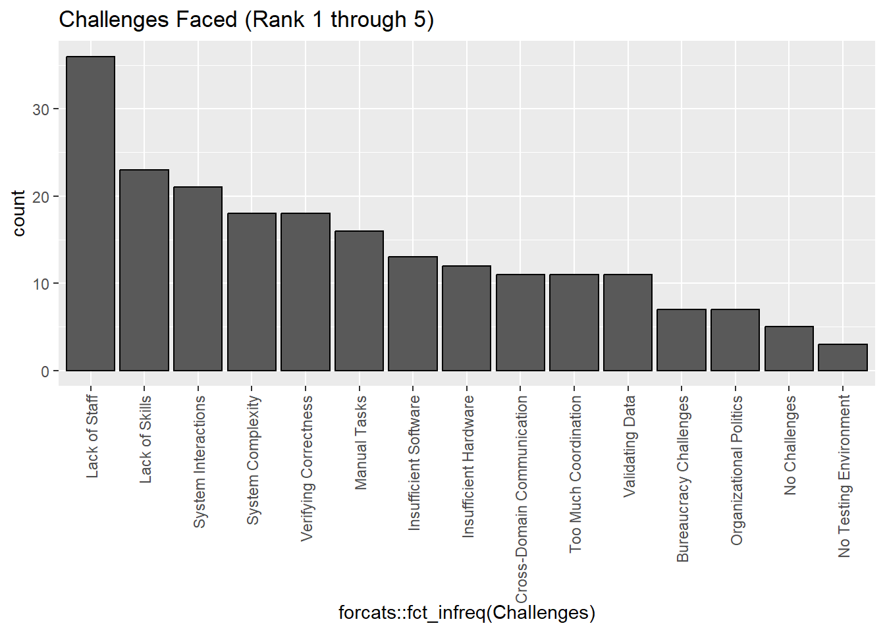
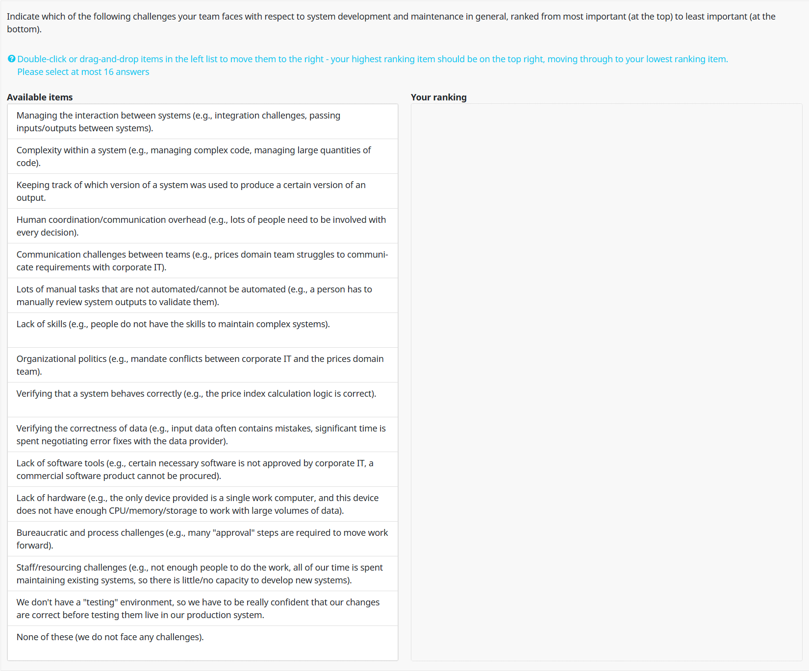

9 Challenges
We conclude the survey by asking respondents to rank the challenges they face with respect to system development and maintenance in general.
The survey question presented to respondents was as follows.
 We show a stacked bar chart of the 5 most commonly cited challenges below.
By far the most commonly cited challenge was “Lack of Staff”. It is important to note that this reported challenge could be explained by any combination of (1) teams working at peak efficiency who are bottle necked by the number of individuals, or (2) teams where the same number of individuals could improve their efficiency if other challenges were alleviated (e.g., skills gaps, technology gaps, and so on).
The second most commonly cited challenge was “Lack of Skills” in the development and maintenance of CPI Production Systems. Given the technical, bespoke, and multidisciplinary nature of CPI Production Systems, there is probably a significant opportunity to bridge the skills gap by finding ways to facilitate knowledge sharing with domain experts.
Interestingly, managing the interaction between systems (“System Interactions”) registered as the third most common challenge. Our suspicion is that most people who develop and maintain CPI Production Systems don’t think extensively about how to integrate the outputs from one system into the inputs of another downstream system.
For example, if one analyst writes an R script that performs some data processing and writes an intermediate output to an intermediate-table.RData file, and a second analyst later discovers they can leverage that intermediate output in another system they are working on, it is unlikely that the second analyst will simply read the intermediate-table.RData file and it will seamlessly integrate with their system.
The more likely scenario is that the first analyst’s output table will not be immediately compatible with the second analyst’s system (e.g., column names don’t match, data types for a primary key column don’t match, the two analysts were using different semantics for the same concept, and so on)1.
In our experience, these kinds of system integration issues are usually small enough that they are resolved in an ad hoc manner. However, the accumulation of many ad hoc solutions over time can create significant technical debt and lead to significant system interaction challenges.
Tied for fourth place are (1) complexity within a system (e.g., managing large quantities of code) and (2) verifying that a system behaves correctly.
Maintaining large and complex code bases over time is an inherently challenging problem that requires years of practice. Our suspicion is that applying a relatively small number of relevant ideas from software engineering can lead to a significant reduction in the complexity of CPI Production Systems2. However, we emphasize that mastering these concepts takes significant practice, even if the concepts are fairly straightforward at face value.
We were not surprised to learn that verifying system correctness registered as one of the top challenges due to the complexity of CPI Production Systems. While there are a large number of tools and techniques that can greatly facilitate the testing of software, being able to take advantage of these tools and techniques requires a minimum level of knowledge. Every major programming language comes with at least one comprehensive framework for automated testing. However, taking advantage of these frameworks require adopting certain idioms in order to integrate the testing framework into the code under test[^3]. In brief, very good solutions to this challenge exist, but they require a baseline level of programming skills to adopt in the first place.
As a final note, we were very surprised to see so few respondents identifying Version Control as a challenge. In Chapter 4, the majority of respondents indicated that they either don’t use a version control system at all, or they use file-naming conventions to version files. We are skeptical that these two facts are true at the same time.
Our suspicion is that the concept of learning how to use a tool like Git that exists specifically for the purpose of revision control is not something that many survey respondents considered until encountering it in the survey. We therefore suspect that respondents may have lumped revision control challenges with another type of challenge such as “Manual Tasks” or “System Complexity”.
The problem of passing data inputs from one system to another system has been around since the dawn of computing. However, the somewhat new concept of Data Contracts (see Data Contract Specification for example) try to address this problem in the context of passing complex structured data between data producers and data consumers.↩︎
For example, adopting a few simple ideas such as grouping related functions into the same module or separating configuration information source code can lead to significant simplifications to code bases that don’t currently leverage these ideas.↩︎